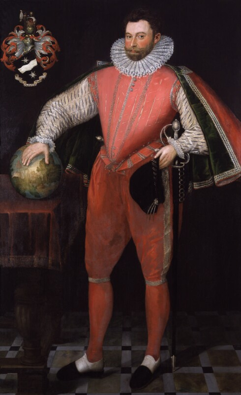

Pirates
Francis Drake, nicknamed “my pirate” by Queen Elizabeth I, was among the so-called “Sea Dog” privateers licensed by the English government to attack Spanish shipping. Drake sailed on his most famous voyage from 1577 to 1580, becoming the first English captain to circumnavigate the globe. On that same trip he lost four of his five boats, executed a subordinate for allegedly plotting a mutiny, raided various Spanish ports and captured a Spanish vessel loaded with treasure. A delighted Queen Elizabeth immediately knighted him upon his return. Eight years later, Drake helped defeat the Spanish Armada.

Sir Francis Drake